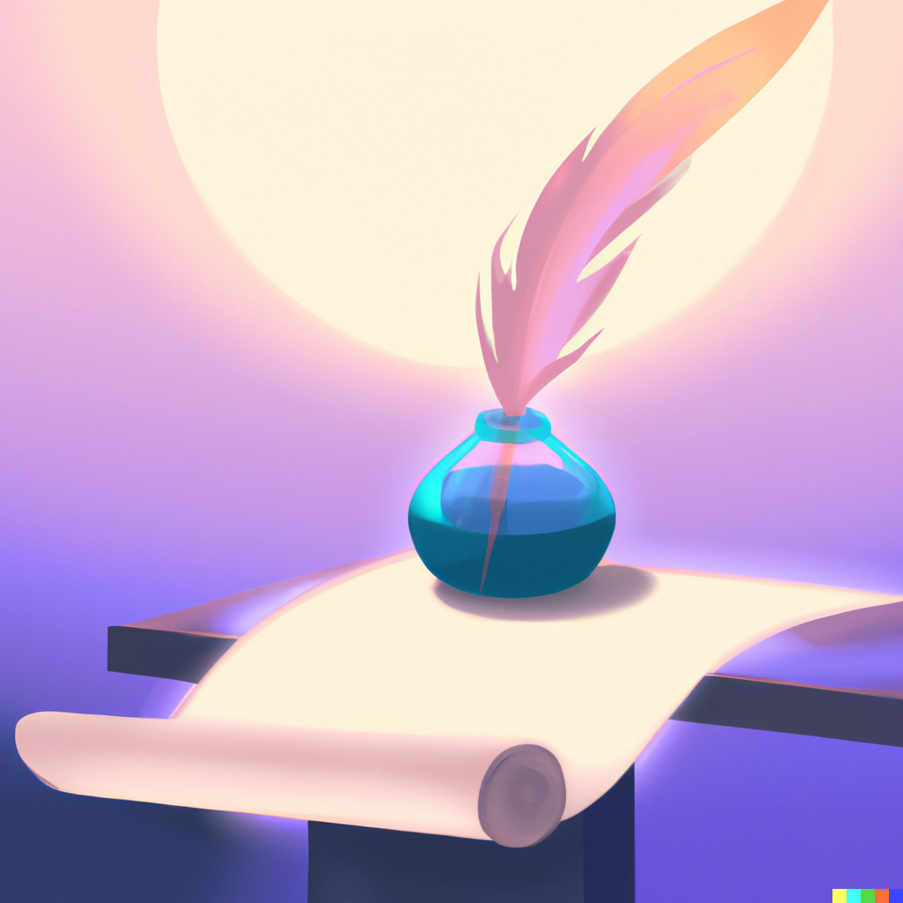

...an experimental governance environment for Discord communities!
Join our Discord!d20 gives online communities the opportunity to experience a diversity of governance structures, decision-making processes, power distributions, cultural dynamics and more–all within the channels of Discord.
Facilitated by a Discord bot, d20 governance can be utilized for a variety of purposes including governance education, possible future scenario simulations, real-life decision-making, community bonding exercises, or simply a good laugh.
d20 was built by a group of researchers from the Metagovernance Project, a nonprofit research collective aiming to empower online community self-governance. Whereas currently, most digital platforms limit communities to hierarchical admin-user models (“implicit feudalism”), Metagov aims to promote alternative governance structures (“modular politics”) through tools and resources such as PolicyKit, the Metagov Gateway, and CommunityRule.
Building on the work of our colleagues at Metagov, our team started out in 2022 by studying the challenges communities face when it comes to designing or evolving their governance structures and processes. With the growing trend towards self-governance on the internet, governance literature and tooling seem to be just about everywhere these days. However, there aren’t very many spaces for more hands-on learning about governance, experimentation, simulation, or even just play! This was how d20 was born…
Our goal with the d20 game is to create an environment where communities can not just learn basic governance vocabulary but engage closely with these concepts through practice and gameplay. We strive to give members of online communities hands-on experiences with alternative governance processes so that they can be more intentional about the way they design these complex systems in real life.
The agora is a public open Discord channel where your community can test out the various features, experiment with different decision-making processes, run one-off governance experiments, change game settings, and sporadically and asynchronously engage with the different features of the d20 bot.
The “Build a Community” game is a ~25-min narrative-led quest taking place in a new, specified Discord channel where the d20 bot prompts players to come together to establish themselves as a new community.
Each stage exposes players to a different decision-making process, cultural environment, and governance structure they must navigate in order to complete tasks and move forward. Once the game ends, the channel is archived.
We are still at the early stages of developing this project and would love to collaborate with online communities. Come play the game with us, make a pull request in our Github repo, or leave a feature request in our Github issues.
We built this game in hopes that it will inspire creative use cases around specific challenges online communities might have, real-life circumstances they face, or future possible scenarios they might want to see played out. Some ideas include civic education, community conflict mediation, reputation building, or any kind of custom role-play game. If you have an idea for a game, we’d love to hear from you!